툴보다 원칙이 먼저인 이유
발표자는 자신을 전문 디자이너도 AI 엔지니어도 아닌 '빌더'라고 소개해요. AI를 배우는 목적은 기술을 익히는 게 아니라, 사업과 업무에 쓸 결과물을 빨리 얻는 거예요. 한때 논문까지 찾아 읽었지만 그런 지식을 내려놓고 만드는 데만 집중하자 오히려 결과가 더 빨리 좋아졌다고 해요.
그래서 프롬프트를 길게 쓰지 않아요. 길어질수록 AI가 가진 능력을 다 쓰지 못한다고 봐요. 대신 만들어야 할 결과물을 분명하게 전해요.
대화로 조금씩 고치면 왜 안 될까요
많은 사람이 AI와 대화하면서 조금씩 발전시키면 더 낫다고 생각해요. 발표자는 반대로 봐요. 목표가 흐린 채로 시작하면 결과가 잘 안 나와요. 아래 화면 위쪽이 그런 경우예요. 말풍선이 구불구불 이어지다 물음표에서 멈추고, 오른쪽 빨간 동전 더미가 쌓여 있어요. 아래쪽은 지도를 들고 깃발까지 곧게 가는 길이고, 동전은 조금만 쓰고 체크 표시를 받아요.
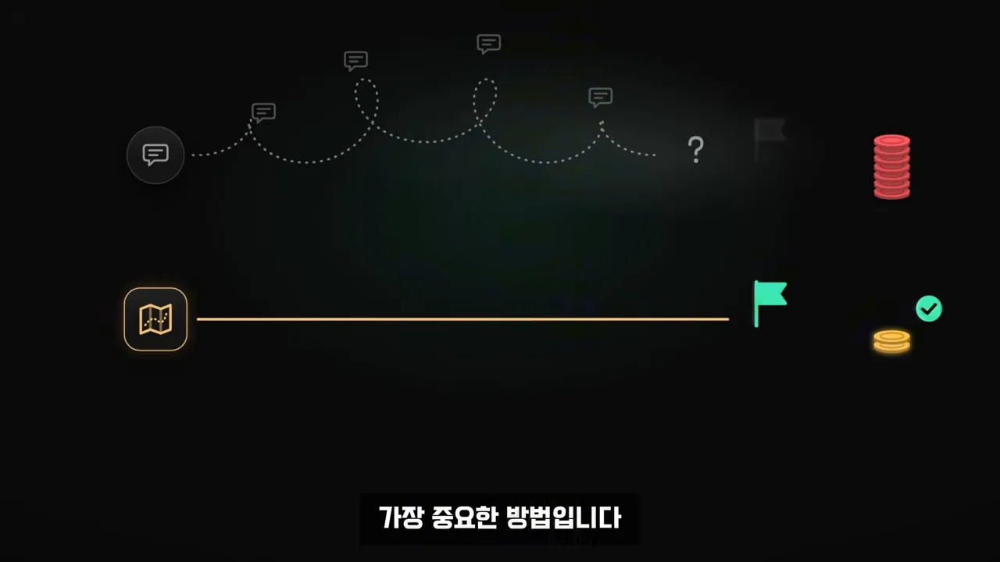
목표부터 정해요: 누가, 무슨 문제, 어떤 행동
목표를 정하는 힌트는 사용자에게 있어요. 발표자는 2001년 애플이 아이팟을 내놓으며 내세운 '주머니 속의 1,000곡'을 예로 들어요. 화면 왼쪽 5GB는 제품의 사양이고, 오른쪽 1,000곡은 사용자가 얻는 결과예요. 사람 표시가 붙은 쪽은 1,000곡이에요.
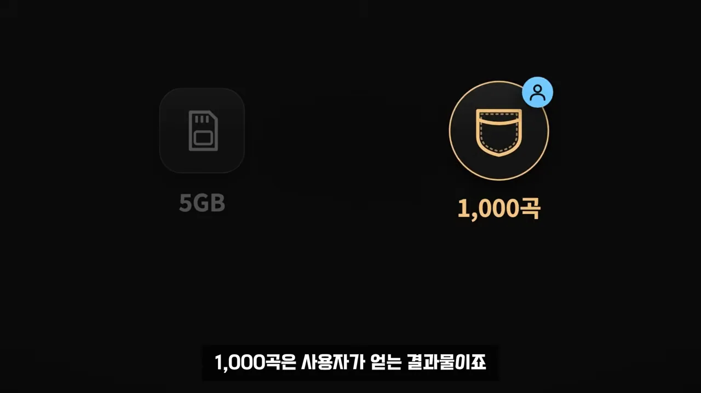
디자인 전에 정하는 세 가지
발표자는 디자인을 시작하기 전에 딱 세 가지만 정해요. 셋을 함께 정해야 결과물의 방향이 분명해진다고 해요.
- 누가 쓸 것인가
- 어떤 문제를 해결하는가
- 사용자가 어떤 행동을 하게 만들 것인가
같은 서비스, 두 가지 프롬프트
예시는 방 사진을 올리면 원하는 스타일로 꾸민 모습을 미리 보여 주는 가상의 AI 인테리어 서비스예요. 도구는 Claude Design이에요. 화면 아래 칸에 Claude Design이 선택돼 있고, 모델은 Opus 5.5예요.
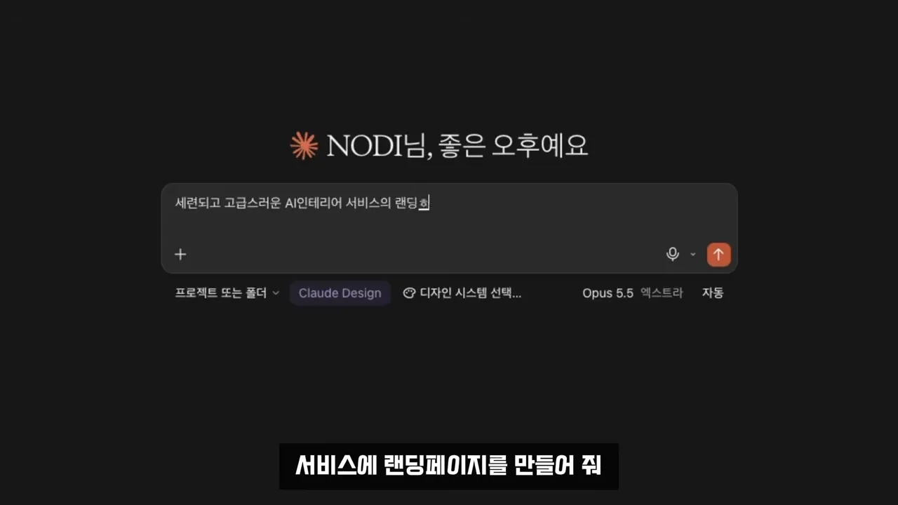
두 요청을 나란히 놓으면 차이가 분명해요.
| 첫 번째 요청 | 두 번째 요청 | |
|---|---|---|
| 담은 것 | 세련되고 고급스럽게, 모던 카드, 화려한 애니메이션 | 사용자(자취 초보), 문제(꾸미는 법을 모름), 원하는 행동(내 방 꾸며 보기 시작) |
| 핵심 화면 | 정하지 않음 | 실제 방이 달라지는 비포·애프터 |
| 결과 | 겉은 그럴듯하지만 어디를 눌러야 할지 모호해요 | 할 일이 바로 보이는 페이지가 나왔어요 |
첫 결과는 어두운 배경에 금색 글씨로 '사진 한 장으로 완성하는 당신의 공간'이라고 적고, 오른쪽에 도면 같은 그림을 둬요. 버튼은 작고, 아래엔 Japandi, Mid-Century 같은 스타일 이름이 한 줄로 흘러가요. 발표자는 여기서 사용자가 어디를 눌러야 하는지 물어요.
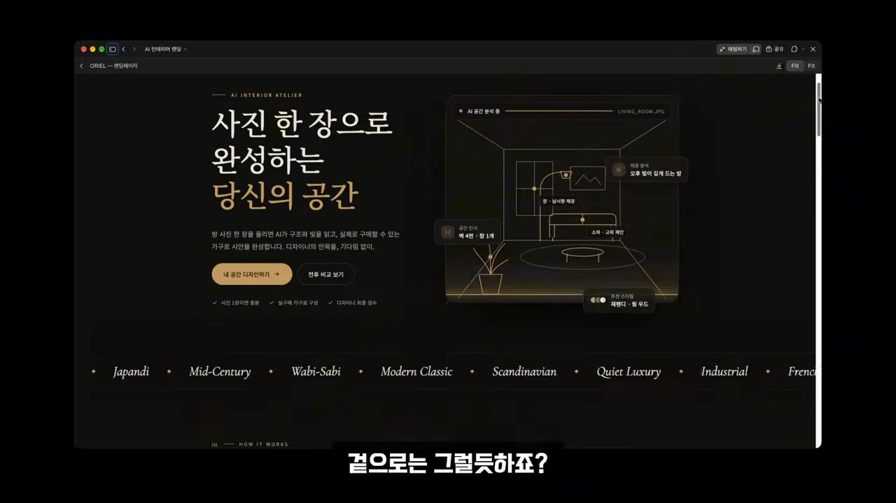
두 번째 요청 전에 발표자는 세 질문의 답을 화면에 정리해요. 집 아이콘의 '자취 초보', 소파와 물음표의 '꾸미는 법 모름', 업로드 아이콘의 '방 사진 올리기'가 아래 입력창 하나로 모여요.
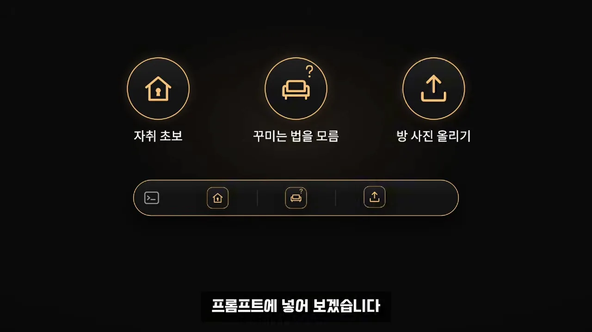
두 번째 결과는 첫 화면부터 다르게 말해요. 제목은 '사기 전에, 내 방에 먼저 놓아보세요.'이고, 바로 아래 금색 버튼 하나가 눈에 띄어요. 그 아래로 비포·애프터 화면이 이어져요.
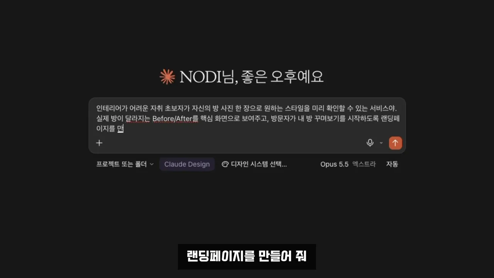
핵심 화면으로 요청한 비포·애프터예요. 왼쪽 'BEFORE · 지금 내 방'은 어두운 방에 옷걸이와 빨래 더미만 있고, 가운데 손잡이를 밀면 오른쪽 'AFTER · 내추럴 우드'가 드러나요. 침구, 조명, 커튼, 포스터, 러그에 1~5 번호가 붙어 있어요.
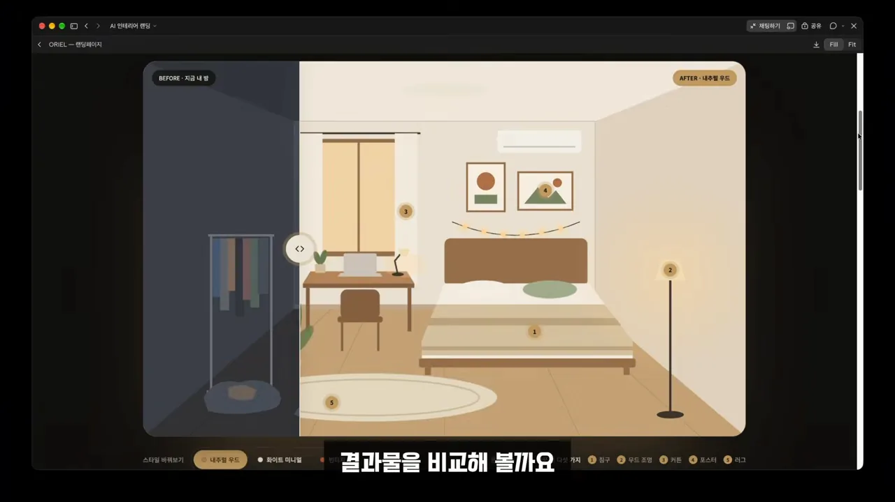
발표자는 전체 계획을 세우라는 말이 거창한 기획서를 쓰라는 뜻은 아니라고 덧붙여요. 사용자, 문제, 최종 목표만 확실히 정하면 돼요. 그래야 엉뚱한 결과를 처음부터 다시 만드는 일이 줄고 시간과 토큰도 아낄 수 있어요.
레퍼런스에서 원칙만 가져와요
목표대로 만들었다고 끝은 아니에요. 다음 과제는 디자인 완성도예요. 많은 사람이 '무엇이 좋은 디자인인지 모르겠다'고 고민하는데, 발표자의 답은 간단해요. 좋은 레퍼런스를 쓰라는 거예요.
베끼지 말고 이유를 분석하게 해요
마음에 드는 공간 사진과 디자인을 찾아 화면을 캡처해 AI에게 첨부해요. 중요한 건 그 화면을 복제하는 게 아니에요. 왜 좋아 보이는지 분석하고 그 원칙만 쓰는 거예요. 발표자가 넣은 요청은 이래요.
첨부한 디자인에서 공간 사진을 강조하는 방식, 타이포그래피, 여백, 색상 대비, 시각적 위계의 특징을 분석해 줘. 브랜드나 레이아웃은 그대로 복제하지 말고 현재 AI 인테리어 서비스의 목적에 맞게 원칙만 적용해 줘.
— 영상 03:54 (화면 입력 기준)
요청의 핵심은 분석 항목을 짚어 준 데 있어요. 사진을 어떻게 강조하는지, 타이포그래피와 여백은 어떤지, 시각적 위계가 어떻게 잡혔는지를 보게 하면 AI가 '좋아 보이는 이유'를 말로 바꿔 줘요. 브랜드와 레이아웃을 빼라는 말은 따라 하기가 아니라 원칙만 옮기라는 뜻이에요.
결과 페이지는 분위기가 완전히 바뀌었어요. 맨 위를 큰 방 사진이 채우고, 그 위에 흰색 굵은 글씨로 oriel 로고를 얹었어요. 아래 연한 회녹색 바탕에는 '방 사진 한 장이면 충분해요'로 시작하는 짧은 소개만 둬요.
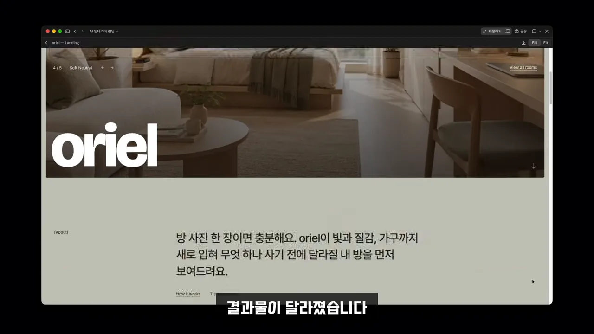
조금 내려가면 이용 방법이 세 줄로 정리돼 있어요. 제목은 'Three steps, no floor plans.'이고, 사진 찍기(Photograph your room), 분위기 고르기(Choose a mood), 비교하고 사기(Compare, then shop)가 넉넉한 여백 속에 놓여요.
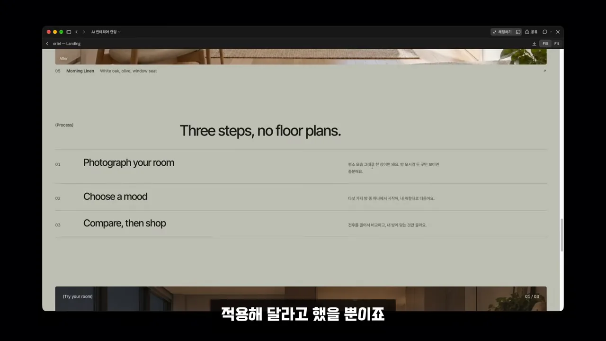
발표자는 대단한 디자인 기술을 쓴 게 아니라고 강조해요. 좋은 디자인을 보여 주고 우리 서비스에 맞게 적용해 달라고 했을 뿐이에요.
덜어내고 세 가지만 확인해요
발표자가 '절대 빼먹으면 안 된다'고 꼽은 건 덜어내기예요. 산업 디자이너 디터 람스의 'Less, but better', 우리말로 '더 적게, 그러나 더 좋게'를 들며 좋은 디자인은 무엇을 뺄지 판단하는 데서 시작한다고 해요.
결과물을 받으면 보는 세 가지
그래서 발표자는 AI가 만든 결과물을 받으면 딱 세 가지만 확인해요. 질문마다 무엇을 보면 되는지 그림으로 옮겼어요.
영상은 세 질문을 하나의 화면 그림으로 보여 줘요. 왼쪽 랜딩 페이지 모형에서 금색 버튼에 커서가 놓여 있고, 오른쪽에 눈, 클릭, 빼기 아이콘이 위에서부터 차례로 있어요. 눈 옆 칸에만 초록 체크가 들어가 있어요.
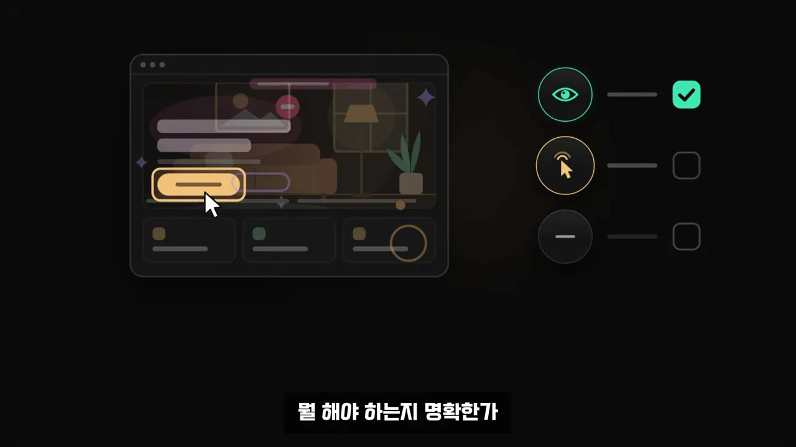
툴이 바뀌어도 남는 것
영상은 지금까지의 방법을 세 단계로 묶어요. 1번 과녁 '목표', 2번 사진 '참고', 3번 빼기 '덜어내기'를 지나면 오른쪽 끝에 체크 표시가 붙은 완성 페이지가 나와요.
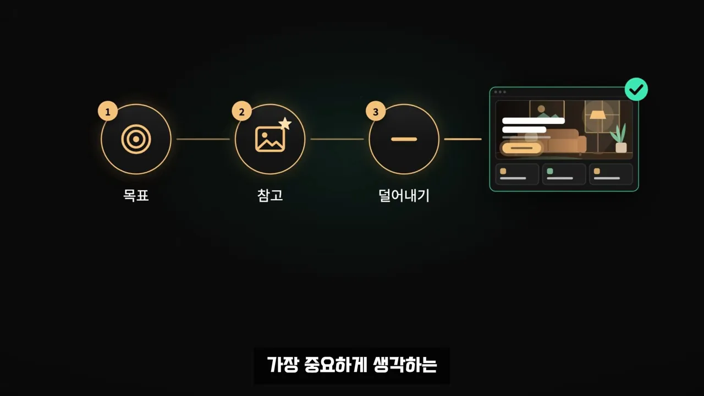
처음부터 완벽할 필요는 없어요. 목표를 분명히 정하고 결과물은 계속 고치면 돼요. 이런 기준이 있으면 AI 도구가 바뀌어도 처음부터 다시 배울 필요가 없다는 게 발표자의 말이에요.
한 번에 화려하게보다 자주 적용하기
시간과 욕심이 있다면 컬러 이론, 그리드, 브랜딩까지 공부하면 좋아요. 하지만 처음부터 다 할 필요는 없어요. 아래 그림의 보라색 곡선은 한 번에 치솟았다가 금방 내려앉고, 금색 계단은 작게 반복하며 꾸준히 올라가요.
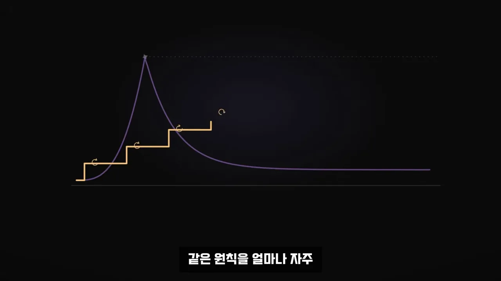
발표자는 랜딩 페이지 하나로 재미를 붙이고, 상세 페이지나 PPT(PowerPoint presentation)로 넓혀 가라고 권해요. 그러면 AI가 무엇을 만들어 줘도 좋은 결과를 골라내는 눈이 생긴다고 해요. 목표는 전문 디자이너가 아니라, 내 사업과 업무에 필요한 결과물을 스스로 만들고 판단하는 거예요.
여러분의 결과물을 AI 툴에 맞추지 마시고 AI 툴을 여러분의 기준에 맞추셔서 툴이 바뀌어도 흔들리지 않는 결과물 만드시기를 바라겠습니다.
— 영상 06:42